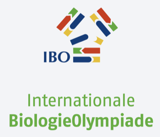
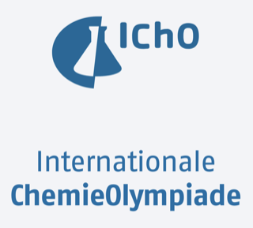
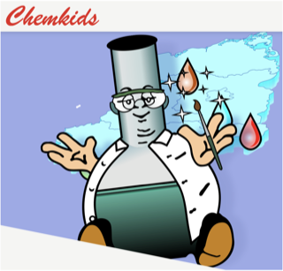
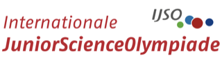
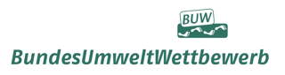
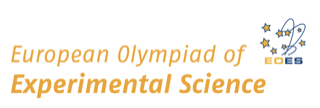

Ergebnisse
🏆 Wettbewerbsprojekte 2025/26
Regionalwettbewerb Berlin BuchWie das Wärme-Sensorprinzip des Käfers Melanophila acuminata zu einem Sensor für die frühzeitige Erkennung von Waldbränden wird.
Rückführung organischer Abfälle durch Biotechnologie am Beispiel von Kaffeesatz aus Cafés.
Ein selbstgebauter Beamer mit hoher Auflösung und großem Projektionsbild bei geringen Kosten.
Weitere AG-Projekte
Lernpfade & ErgebnisseSchritt für Schritt: Wie isoliert man DNA aus Erdbeeren mit Hausmitteln? Mit Wissens-Quiz und Extraktionsanleitung.
Grundlagen der Roboterprogrammierung: Sensoren, Motoren und autonome Navigation mit dem Fahrroboter.
Bau deinen eigenen Lichtwecker: Schaltkreise, Programmierung und das Prinzip des sanften Aufwachens mit Licht.
Wie baut man eine TicTacToe-KI aus zehn kleinen Funktionen? Python-Spiellogik und Minimax-Algorithmus zum Selbsterschließen.
Wie aus blankem Titan durch Strom und eine einfache Elektrolytlösung leuchtende Farben ganz ohne Farbstoffe entstehen.
Weitere Forschungsergebnisse folgen in Kürze.
DemnächstProjekte 2026/27
🏆 Wettbewerbsprojekte 2026/27
In EntwicklungEine Web-App erstellt aus Spielposition, Alter, Leistungsniveau und Saisonphase automatisch einen individuellen Trainingsplan – mit Kalenderfunktion für Spiel- und Trainingstage.
Eine plattformunabhängige Web-App für unser Vis-Spektrometer „Lambda" – Kamera-Feed, Kalibrierung und Live-Spektrum direkt im Browser statt gebunden an den Raspberry Pi, ausbaufähig zum UV-Vis-Spektrometer.
→ Live öffnen (nur im selben WLAN wie der Pi) → Bedienungsanleitung ansehenPopping Boba nach dem Spherifikations-Rezept der IChO 2027 nachbauen und die süße Variante gezielt lecker und gesund weiterentwickeln – von der Zuckerreduktion bis zum Sensorik-Panel.
Eine selbst gebaute und gestaltete Mini-Spielkonsole mit Arduino, OLED-Display und Joystick – mit einem Jump-&-Run-Minispiel, weiteren Spielen und eigenen Zusatzfunktionen auf einem Gerät.
Die Projekte sind noch in der Entwicklung und bleiben bis zum Wettbewerb anonym – öffentliche Links folgen erst später.
Dein Forschungsprojekt für 2026/27 gesucht!
Für die kommende Jugend-forscht-Runde 2026/27 sind noch keine Projekte festgelegt – und genau deshalb suchen wir jetzt Schülerinnen und Schüler mit eigenen Ideen und Forschungsfragen. Egal ob Technik, Chemie, Biologie oder Informatik: Wenn du Lust hast, ein eigenes Projekt bis zum Wettbewerb zu entwickeln, ist deine Teilnahme herzlich willkommen und ausdrücklich erwünscht.
🔭 Mehr über die Teilnahme erfahren →Experimente
Einstieg in additive Fertigung: vom Tinkercad-Entwurf über die Gravur bis zum gedruckten Namensanhänger.
Ätherische Öle per Wasserdampfdestillation gewinnen, Flacon konstruieren und in 3D drucken.
Eigene Erkenntnisse zu jedem Projekt als Foto, Video oder Text festhalten und per E-Mail archivieren.
Ampelschaltungen mit Arduino, LEDs und Mikrocontroller nachbauen und sogar eine ganze Kreuzung programmieren.
Wasserstoff per Elektrolyse herstellen, pneumatisch auffangen und mit der Knallgasprobe nachweisen.
Chemie, die man anfassen kann: Verseifung von Fetten zu Seife im Selbstversuch – inkl. Sicherheits-Check.
Mit dem Makey Makey Alltagsgegenstände wie Bananen oder Alufolie in echte Controller-Tasten verwandeln.
Das Phänomen des tansanischen Natronsees im Miniaturformat nachstellen: eine Fällungsreaktion mit zwei Salzen.
Weitere Experimente folgen demnächst.
DemnächstWettbewerbe & weitere Angebote





